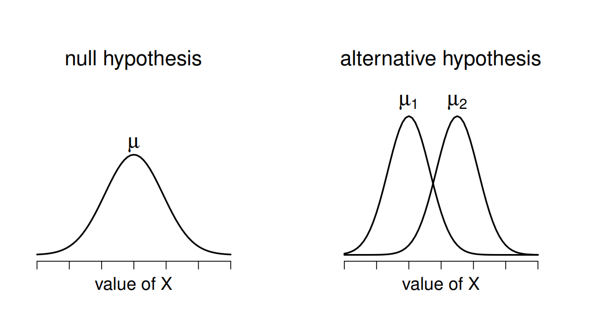
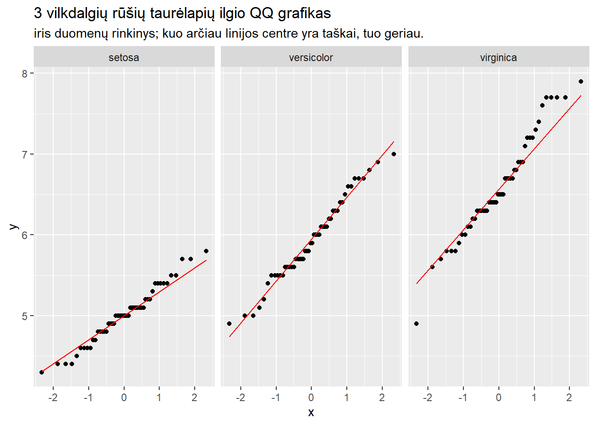

Palyginti dviejų imčių vidurkius yra standartinė užduotis atliekant tyrimus, todėl Stjudento t-testas yra vienas dažniausių taikomų statistinių testų. Jeigu atliekate tyrimus, tikėtina, jog susidursite su duomenimis, kur t-testas bus tinkamas. Dėl to svarbu suprasti, kada taikyti testą, kaip jį interpretuoti bei kaip jį pateikti publikacijoje.
Kam skirtas t-testas?
Stjudento t-testas yra skirtas palyginti dviejų grupių vidurkius tarpusavyje. Atlikdami testą savaime suformuluojame nulinę hipotezę, jog grupių vidurkiai nesiskiria, ir alternatyvią hipotezę, jog grupių vidurkiai skiriasi. Testas mums nieko nepasako apie priežastinius ryšius ir pasako, kiek tikėtinas mūsų stebimas skirtumas tuo atveju, jeigu skirtumo tarp grupių nėra.

Iliustracija iš D. Navarro “Learning Statistics with R”. Stjudento t-testas daro prielaidą, jog duomenys pasiskirstę pagal normalųjį skirstinį, todėl iliustracija vaizduoja tokį skirstinį. Dešinėje skirstiniai turi panašią formą, nes įprastas Stjudento t-testas daro prielaidą, jog imčių standartiniai nuokrypiai yra vienodi.
Kada rinktis t-testą?
T-testą galima atlikti su tolydžiu kintamuoju, kurį galima padalinti į dvi grupes. Tolydų kintamąjį toliau vadinsime priklausomu kintamuoju, o savo grupių kintamąjį - nepriklausomu kintamuoju.
Pirma, priklausomas kintamasis turi būti tolydus, t.y. jis turi gebėti įgyti daug skirtingų reikšmių. Tinkami priklausomi kintamieji:
Matavimai, kurie gali įgyti be galo didelį kiekį reikšmių: ūgis, svoris, amžius ir pan.
Proporcijos: dalis skaidulų nerve, atsakymai tolydžioje skalėje, flourescuojančių ląstelių dalis regimajame lauke, respondentų atsakymai, kiek yra įsitikinę apie ką nors;
Ranginiai klausimai su 7 ir daugiau kategorijų (Likert skalės);
Netinkami kintamieji:
Ranginiai klausimai su 5 ir mažiau kategorijų
2 kategorijų kintamieji (nebent esate ekonomistas ir taikome tiesinį tikimybinį modelį 🤪)
Sudėtiniai skaičiai, pavyzdžiui, ląstelių skaičius matymo lauke, euzinofilų skaičius kraujyje ir pan.
Ranginiai klausimai gali atrodyti negerai, bet t-testas yra pakankamai atsparus nuokrypiams nuo normalumo.
Vietoje formalių testų geriausias būdas įsitikinti, ar duomenys yra pasiskirstę pagal normalųjį skirstinį, yra su Kvantilių-kvantilių (QQ) grafiku arba histograma. Idealiame pasaulyje ieškome, jog QQ grafikas ir histograma atrodytų taip:
ggplot(iris, aes(sample =Sepal.Length))+stat_qq()+stat_qq_line(color ="red")+facet_wrap(~Species)+labs(title ="3 vilkdalgių rūšių taurėlapių ilgio QQ grafikas", subtitle ="iris duomenų rinkinys; kuo arčiau linijos centre yra taškai, tuo geriau.")

QQ grafiką galima nubraižyti su Excel, bet tai reikalautų per daug laiko ir geriau nubraižyti histogramą (pasirinkti duomenis, rinktis skiltį Insert ir pasirinkti histogramą iš Charts skilties):
Jeigu atrodo, jog duomenys neatitinka normaliojo skirstinio nei QQ grafike, nei histogramoje, reikėtų rinktis neparametrinius testus palyginti 2 grupes. Atrodo yra subjektyvus žodis, bet vertinant reikia atsakyti į klausimą: ar atrodo, jog imties mediana ir vidurkis yra panašioje vietoje? Ar mano kintamojo dažniausia reikšmė turėtų būti skirstinio viduryje, ar kur nors vienoje arba kitoje pusėje? Pavyzdžiui, prieš tai minėjome, jog proporcijų duomenys yra tinkami t-testui, bet jeigu dauguma proporcijų yra 0 arba arti 1, tuomet vargu, ar duomenys yra pasiskirstę pagal normalųjį skirstinį. Testo pasirinkimas yra mažiau priklausomas nuo formalių procedūrų, o daugiau nuo tyrimo dizaino ir tyrimo objekto.
į data parametrą reikia pateikti savo duomenų rinkinį
Testui galima naudoti tildės sintaksę, kur kairėje yra priklausomas kintamasis, o dešinėje nepriklausomas kintamasis
subset kintamasis leidžia pasirinkti, jog lygintume 2 grupes, kai nepriklausomas kintamasis turi 3 grupes. Jis yra būtinas tik tada, kai nepriklausomas kintamasis turi daugiau negu 2 kategorijas.
Welch Two Sample t-test
data: Sepal.Length by Species
t = -10.521, df = 86.538, p-value < 2.2e-16
alternative hypothesis: true difference in means between group setosa and group versicolor is not equal to 0
95 percent confidence interval:
-1.1057074 -0.7542926
sample estimates:
mean in group setosa mean in group versicolor
5.006 5.936
Kaip interpretuoti t-testą?
T-testas susideda iš 2 dalių. T-testo techninės dalis apima statistinę t-reikšmę (kokia yra reikšmė iš Stjudento t skirstinio atlikus mūsų grupių lyginimą), laisvės laipsnių skaičiaus ir p reikšmės (kokia yra tikimybė pamatyti tokį arba didesnį skirtumą, jeigu tarp grupių nebūtų skirtumo). Antroji dalis yra vidutiniai dydžiai grupėse bei šių grupių skirtumo pasikliautinasis intervalas.
Abi dalys yra gana svarbios: techninė dalis padeda atlikti metaanalizes bei duoda išvadą, ar skirtumas statistiškai reikšmingas, o antroji dalis leidžia suprasti, koks realus skirtumas yra tarp grupių. Pasikliautinasis intervalas R pusėje yra ypač svarbus, nes vien p reikšmė negali pasakyti, ar skirtumas tarp grupių yra didelis, ar mažas.
Stjudento t-testą grafiškai geriausia pavaizduoti su stačiakampe diagrama (ang. boxplot), o tekstas galėtų atrodyti taip:
Atlikus Stjudento t-testą, versicolor rūšies vilkdalgių taurėlapiai buvo vidutiniškai 0,93 cm ilgesni negu setosa rūšies, skirtumas buvo statistiškai reikšmingas (t = 10,52, CI 95% [0,75–1,11], p < 0,001).
Jeigu lygintume aukščiau buvusį rezultatą ir R, ir Excel, pastebėtume, jog nei vienas iš jų neraportuoja vidutinio skirtumo - jį turime suskaičiuoti patys. Grafiškai geriausia naudoti stačiakampę diagramą: